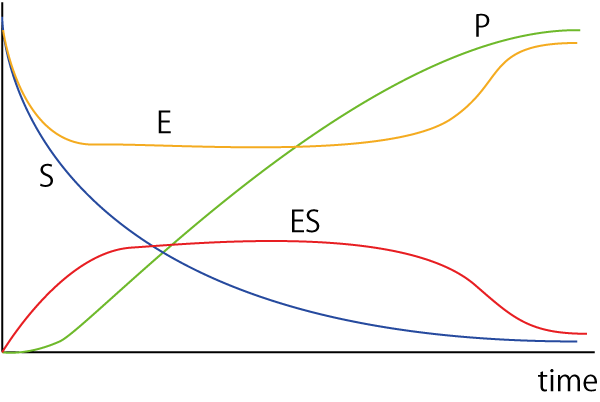
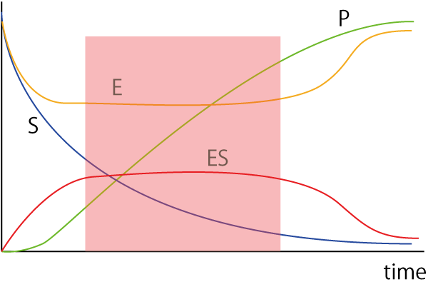
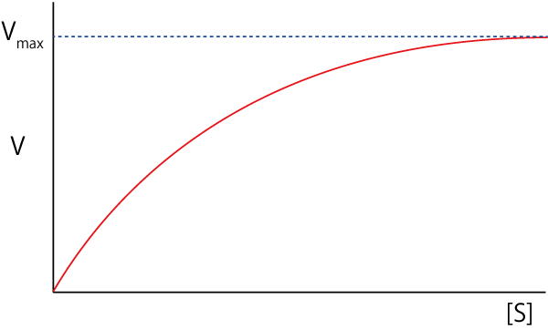
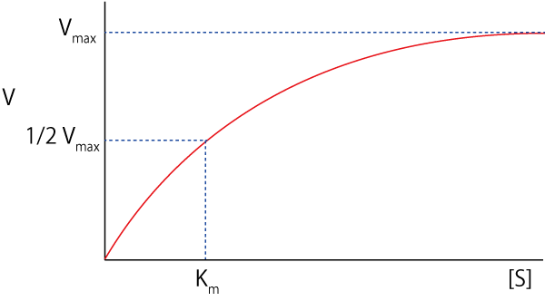
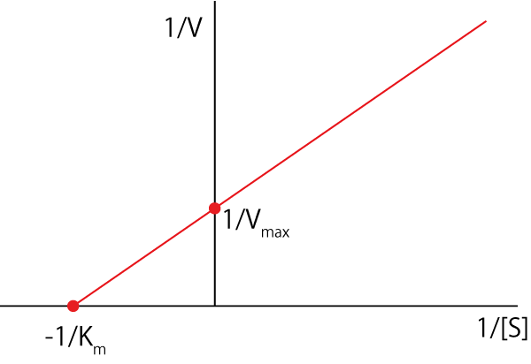

ミカエリスメンテン-01
ミカエリスメンテン反応式については，どの生化学の教科書にも記載されていますが，再度確認していこうと思います．
この記事は，ストライヤー，およびヨビノリさんのYoutubeを参考にしました，ありがとうございます．
・化学反応
一次の化学反応式は，
\( \Large \ce{S ->C[k] P} \)
とS（基質，Substrate）が反応速度ｋでP（生成物，Product）に変換される反応として考えましょう．
ここで，生成物Pの生成速度は，
\( \Large V_P = k [S] \)
となり，各単位は，
\( \Large V_P \ : \ \frac{M}{s} = \frac{mol}{L \cdot s} \)
\( \Large k \ : \frac{1}{s} \)
\( \Large [S] \ : \ M \)
となります．
・酵素反応
酵素は，上記の化学反応の速度定数ｋを上昇させる能力を持つと考えるを良いと思います．
生成速度はｋに比例するので，酵素を大量に入れると生成速度も比例して上昇することになります．
しかし，現実には，
酵素はいっぱいあっても，基質が少なければ，生成速度は頭打ちになる
基質はいっぱいあっても，酵素が間に合わなければ，生成速度は頭打ちになる
こととなります．
これらのことを考慮して，酵素反応を考えよう，というのがミカエリスメンテン反応式です．
・ミカエリスメンテン反応式
そこで，もう少し厳密に酵素反応を考えていきましょう．
厳密に考えると
基質と酵素が結合・解離を繰り返す
そのうち，一部の複合体において基質が生成物に変換される
酵素ー生成物が解離して，生成物が生成される
となります．
式で表すと，
\( \Large \ce{E + S <=>ES -> EP -> E + P} \)
となります．簡単のために，EPはすぐに解離するとして，
\( \Large \ce{E + S <=>ES -> E + P} \)
それぞれの速度定数を考えて，
\( \Large \ce{E + S <=>C[k_{+1}][k_{-1} ]ES ->C[k_{+2}] E + P} \)
となります．
ここで，保存則は，
\( \Large S + P =const \)
\( \Large E + ES =const \)
初期条件は，t=0で
\( \Large S(0) =1, \ P(0) = 0 \)
\( \Large E(0) =1, \ ES(0) = 0 \)
となります．この反応式を厳密に説いてもいいのですが．．．概要を考えていきましょう．
・t=0
S=0, P=0, E=1, ES=0です
・反応スタート
Sは徐々に減少していきます．Pは若干の遅れの後増えていきます
ES複合体が作られるので，Eは減ります．でも生成物の生成とともにEも増えるので０にはなりません．
・反応中
E，ESはある程度一定値となります（厳密には一定にはなりませんが）
・十分反応したら
Sが少なくなるので，それに伴いESも減少します．
Pも増えていきますが，Sがなくなるので一定値となります．
EはSがなくなり，反応が進まなくなるので，もとの値となります．
ESもSがなくなるので，０となります．
となります．図示すると，

となります．ここで，E，ESが一定の定常状態を考えていきましょう．

色付けした部分です．ここでは，
E，ES濃度は一定，生成速度も一定
が成り立ちます．生成速度，[ES]の時間変化は，
\( \Large V_P= k_{+2} \cdot [ES] \)
\( \Large 0 = \frac{d [ES]}{dt} = k_{+1} \cdot [E] \cdot [S] - ( k_{-1} + k_{+2} ) \cdot [ES] \)
\( \Large k_{+1} \cdot [E] \cdot [S] = ( k_{-1} + k_{+2} ) \cdot [ES] \)
\( \Large \begin{eqnarray} [ES] &=& \frac{k_{+1}}{ k_{-1} + k_{+2} } \cdot [ES] \\
&=&
\frac{1}{ K_m } \cdot [E] \cdot [S] \\
\end{eqnarray} \)
ここで，
\( \Large K_m \equiv \frac{ k_{-1} + k_{+2}}{k_{+1}} \)
です．ここで酵素濃度の保存則，
\( \Large [E_T] = [E] + [ES] \)
を使うと，
\( \Large [ES] = \frac{[S]}{ K_m } \cdot ( [E_T] + [ES] ) \)
\( \Large \left(1 + \frac{[S]}{K_m} \right) \cdot[ES] = \frac{[S]}{ K_m } \cdot [E_T] \)
\( \Large \begin{eqnarray} [ES] &=& \frac{K_m}{K_m + [S]} \cdot
\frac{[S]}{ K_m } \cdot [E_T] \\
&=&
\frac{[S]}{K_m + [S]} \cdot [E_T] \\
\end{eqnarray} \)
生成速度は，
\( \Large V_P= k_{+2} \cdot [ES] \)
ですので，
\( \Large V_P= k_{+2}\cdot [E_T] \cdot \frac{[S]}{K_m + [S]} \)
となります．ここで基質濃度[S]をいろいろな場合について考えていきましょう．
・[S]=0
\( \Large V_P= 0 \)
当然ながらもととなる基質がないので，生成速度は０となります．
・[S] << Km
この場合には，分母がKmとなるので，生成速度は，[S]に比例します．
\( \Large V_P \approx \frac{k_{+2}\cdot [E_T]}{K_m} \cdot [S] \)
・[S] >> Km
この場合には，分母が[S]となるので，最大速度
\( \Large V_{max} \approx k_{+2}\cdot [E_T] \)
となります．したがって，まとめると，
\( \Large V_P= V_{max} \cdot \frac{[S]}{K_m + [S]} \)
となります．図示すると，

という曲線となります．ここで，[S]=Kmの場合は，
\( \Large V_P= \frac{1}{2} V_{max} \)
となるので，生成速度が最大速度の半分になる基質濃度がKmとなります．

・Vmax, Km値の求め方
一般的に使われる方法は，両逆数プロットです．
両辺の逆数を取ると，
\( \Large V_P= V_{max} \cdot \frac{[S]}{K_m + [S]} \)
\( \Large \begin{eqnarray} \frac{1}{V_P} &=& \frac{1}{V_{max}} \cdot \frac{K_m + [S]}{ [S]} \\
&=&
\frac{1}{V_{max}} + \frac{K_m }{V_{max}} \frac{1}{ [S]} \\
\end{eqnarray} \)
となり，\( \Large \frac{1}{V_P} \)と\( \Large \frac{1}{[S]} \)，でグラフを書くと直線関係となります．

さらには，Y軸との交点が，\( \Large \frac{1}{V_{max}} \)，X軸との交点が，\( \Large \frac{1}{K_m} \)，となります．
次に，もう少し簡単に求める方法，解離定数，を使っての計算を考えていきます．